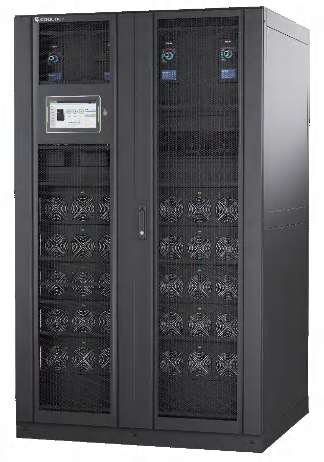

COOLNET
PGM
Модульный ИБП
- В каталоге серия обозначена как 50–600 кВА. В таблице приведены конфигурации 200, 240, 300, 360 и 600 кВА с выходным коэффициентом мощности 1.
- Трёхфазный вход и выход, модульная архитектура N+X, горячая замена и расширение силовыми модулями.
- Экран 10″, обслуживание спереди, холодный старт от батарей. Число батарей и зарядный ток настраиваются под конфигурацию.